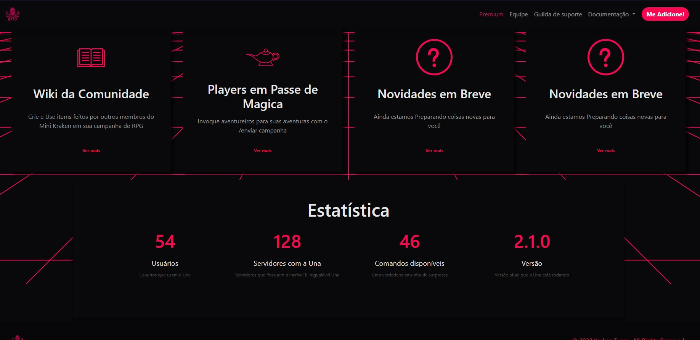

O dado macro do /dh não funcionava foi arrumado
A atividade do bot exibia Universes 🪐 ao invés da quantidade correta
/ficha dava erro em alguns sistemas em inglês
arrumado [Object object] no /grimório.
/enviar campanha agora envia pra avaliação por webhook por causa dos shards
arrumados vários erros com sistemas customizados.
arrumado erro no botão de deletar iniciativa caso a mensagem fosse apagada.
arrumado erro que não permitia setar o cargo de mestre.
ordem paranormal: removida perícia de prestidigitação e colocada adestramento no lugar
Adicionado o comando /grimorio que permite pesquisar mágias de d&d (atualmente se limita aos truques)
comando /resgatar finalizado
Implementado sistema de Shards
Implementado sistema de poder ter sistemas personalizados (homebrew) em seus servidores
Implementação de sistema de cache, comandos estão respondendo mais rápido e dependendo menos do banco de dados.
Otimização do código de maneira geral
Correção de mais de 26 bugs
Sistema de Incremento no /editar status
Adição do /server Icon
Preparativos para o Mini Kraken Gen2
Adicionado o Sistema de RPG Carbon 2185 (Sistema de RPG de Cyberpunk)
+ Rolagem de dados sem slash, basta digitar 1d20 ou qualquer expressão em qualquer chat, que o Mini Kraken vai responder, caso queira desativar, basta remover a permissão da Una ler o chat.
+ Comando de Ship
+ Mudança da Host, mais FPS no Bot!
Já procurou alguma vez RPG na internet? Você reparou a quantidade de mesas diferente que o mesmo mestre pode ter? Em vez de perder horas procurando, deixe que o Mini Kraken facilite a sua busca pela Mesa ideal com o melhor Sistema. Mini Kraken compara as mesas de RPG, é só acessar o Chat de mesas e pesquisar.
+ Adicionado "/enviar campanha" comando para divulgação de mesas de RPG através de Webhooks
Mudanças no gerador de nomes agora está usando o mesmo script e base de dados do site.
Correção de Bugs e Otimização dos códigos.
Corrigidos alguns bugs e erros em alguns sistemas.
Alteração e correção da tradução de alguns comandos.
Foi adicionado um Gerador de nomes do site do Mini Kraken para facilitar a criação de Fichas de RPG.
JÁ disponível em: https://minikraken.tk/tools/names ou através do Comando /gerar nome
Estaremos trazendo mais novidades para o site ao decorrer da semana, esperamos que gostem das novidades. ah e por sinal apresento pra vocês um pouco do visual da UNA em estilo anime.
Após alteração na API a Una havia quebrado a partir das 19:00, o problema foi corrigido com a atualização
Alteração nos comandos de baralho:
+ /baralho Poker+ /baralho Tarot
Alterações nos sistemas:
+ Adição de Pericias de Ordem (Crime, Sobrevivência, Investigação, Artes)
Geral:
+ Adição de mensagem de erro no /resgatar (/reedem)+ Otimização da gif no /ajuda (ainda trava porém menos, é um problema no app mobile do discord, não acontece na versão IOS)
- Removido bugs nos sistemas T20 algumas pericias estavam trocadas
Adição dos novos comando de geração.
/gerar cidade - Gera aleatoriamente o nome de uma cidade e algumas informações.
/gerar nome - Gera o nome de um personagem aléatorio.
Alteração no comando /ficha - antigamente era usado /card para acessar a ficha em inglês agora é /sheet.
Mecanismo de Ticket Feito.
Não chamaria isso de atualizção, porém a UNA ganhou uma documentação para explicar como usa os comandos.
+ Tormenta finalmente adicionado aos sistemas!!!
+ /votar agora dá mais KC (ajustado de acordo com a inflação)
+ Agora o /kc atm te avisa para votar se você não votou nas últimas 12 horas
- Removidos bugs no /iniciativa e no /kc atm
- Corrigidos erros de digitação em certos comandos
Adicionado comandos para ver informações de usuários.
/user info | /user avatar | /user banne
A Una ganhou a primeira previa dos comandos de economia, agora você poderá usar os comandos: "/kc atm", "/kc top" "/kc pay" atualmente os comandos "/daily" e vote não estão funcionando"
Quir fez várias alterações no codigo para otimiza-lo porém ele não sabe ao certo como ele fez isso
- Corrigido bug em que nenhum /editar funcionava
+ Adicionado /editar pericias
+ Adicionado comando /iniciativa (agora oficialmente), um comando para rolagem de iniciativa
Adicionadas perícias "Artes" e "Investigação"
- Resolvido bug em que quando rolando com vantagem as perícias não somavam os bônus
- Resolvido bug no /di que não permitia a rolagem de atributos.
- Erro no editar pericias em Espanhol.
O bot finalmente foi 100% adaptado para JS, e de forma que todos os sistemas agora são configurados 100% por JSON.
Ok, mas o que isso muda?
Bem, agora o bot está quase pronto para receber sistemas customizados, apenas alguns ajustes e usuários premium poderão criar sistemas customizados, enviar e usar.
No momento, o maior desafio é criar uma interface gráfica para isso, mas quem souber programação, se quiser pode vir falar com @Rinne para mostrar a estrutura do JSON. Estamos oferecendo Premium Server por 1 mês para quem ajudar a adaptar um sistema oficial que não foi feito ainda (como Tormenta20 e Call of Cthulhu)!
/ficha agora está completamente funcional, e foram adicionadas perícias nela, das quais o /di puxa direto, não mais precisando ver quais perícias você tem
- Correção do bug do botão de editar Vida, demais botões do /ficha ainda não funcionais.
- Correção do bug do botão de editar Vida, demais botões do /ficha ainda não funcionais.
- Uma pequena correção de Bugs e otimização do código, as respostas estão significativamente mais rápidas.
Adicionado o Comando /deck que retorna uma carta aleatória de um baralho de 52 cartas (sem coringas), agradecemos a apreciamos as sugestões.
#Patch 1
Correção dos Links de Suporte
Correção da Mensagem de dado macro não definido.
#Patch 2
Agora os comandos como /config, /editar dados, /ficha & /di estão funcionando porém o /editar atributos ainda não. e deve chegar no final de semana.
#Patch 3
Sistema Anti-Crash adicionado ao bot, caso ocorra um grande erro, ele vai ignorar e seguir. ao invés do bot inteiro morrer, apenas o comando vai dar erro.
#Patch 4
O Comando /editar atributos está disponível novamente, assim como o botão de editar os atributos no /ficha entretanto os demais botões do /ficha ainda não estão disponível como o controle de vida que chegará no próximo patch
Eita BBs, estamos rodando em javascript agora, tá nem tudo está 100% algumas funções estão desativadas, mas estamos rodando em javascript.
/d - agora possui sistema de auto completar com os dados macros
/editar dados - permite que você defina os dados macros
/di está desativado temporariamente
/ficha - está desativado temporariamente
/config - reformulado adicionado novas opções.
Novo sistema de traduções.
Teve bem mais coisa, quando eu acordar eu faço um patch decente.
Olá amores, acabei de sofrer uma leve alteração, aparentemente espaçamentos no seu nome me deixavam maluquinha da cabeça.
- Bug do /ficha corrigido no sistema DnD
+ Correção de Bugs nos Logs
+ Agora tem um botão novo no /ficha que permite editar o dinheiro.
+ Adicionar o comando de dados secretos o /dh onde apenas que o digita consegue ver o resultado
+ Reformulada a Interface do /enviar campanha
+ exporte sua ficha de rpg
+ Adicionado sistema de economia local de RPG, utilize /coin para modificar seu dinheiro, e /ficha para ver
# Comando /coins antigo foi renomeado para /kc, para evitar confusões
- Corrigidos alguns erros de grafia --causados por QuirDon analfabeto--
Em breve será possível alterar o símbolo do dinheiro da mesa, como de $ para R$
Atualização de sistema agora o sistema de ordem paranormal teve o seu sistema de rolagem automatica atualizado para o sistema do livro. ou seja caso eu tenho 1 de força eu rolo 1d20 anteriormente ele estava rolando 1 dado a mais sempre
Lançamos uma pequena alteração, o /di de ordem paranormal aparece apenas para o user, parando de poluir o chat.
nossas infrestruturas ficaram sobrecarregadas devido os novos usuarios, que fez com que seja necessario alterações em alguns sistemas para que o bot tenha a melhor eficiencia possivel e elas foram feitas.
Alteração da NavBar no site na aba de lista de comandos
Demos inicio ao desenvolvimento de novos sistemas ligados a ordem paranormal que vão chegar em um update futuro como pontos de sanidade na ficha.
Sejam bem vindos ao mundo de ordem paranormal, a pedido de vocês desenvolvemos um auxiliador de rolagem para ordem na Una, além disso reformulamos vários comandos que já existiam.
+ Adição da opção de escolher sistema no /config que conta com as opções ordem e DnD
+ Reconstrução de todos os sistemas que envolvem rolagem para se adaptar aos novos sistemas
/ficha; /di ; /edit atributes estão de cara nova e mais intuitivos
+ Criação de um /di novo com foco em ordem paranormal
+ Criação de fichas de ordem paranormal
+ Mudanças Técnicas no código
+ Agora mais comandos ganham suporte ao sistema de tradução automática
[Aviso] O Update será implementado as 19:00 onde todos os sistemas do bot vão entrar em manutenção para sua implementação.
[Alerta] por enquanto o /di de ordem está apenas em português entretanto em breve ele será traduzido para inglês.
O update que o QuirDon não sabia era pra ser esse (só que naquela versão tava tudo bugado pq eu esqueci de testar)
+ Fate dices foram de fato adicionados (FINALMENTE), sugestão do Alec de uns meses atrás que eu tava sem tempo pra fazer
+ Refatorada validação de dados, porque tava literalmente IMPOSSÍVEL mexer naquilo
+ Preparativos iniciados do sistema de ordem, /di do sistema quase pronto
+ Adicionado comando /dm, é a parte de dados macro do /di
- Removidos dados macro do /di para serem movidos para o /dm
- Removido bug no /edit attributes que não permitia salvar o atributo 0 (não sei como eu nunca percebi, tava aí desde o dia do lançamento do comando)
- Removido bug no /di que atributos negativos causavam erro no dado
Alteração no Sistema de Dados com novidades.
Quais as novidades Quir? boa pergunta o Semanual fez e não falou nada
# Aparentemente só criou bugs porém hoje a noite tem update
Correção de Bugs um bug no /wiki itens fazia o bot Morrer
Agora não é mais necessário que o bot seja reiniciado para lançar novos comandos.
Correção de Bugs no /hp (ele está funcionando porém provavelmente irei refazê-lo durante a semana, por ser um comando antigo não está tão eficiente quanto poderia.)
Agradecimentos ao - Izou.#0838 por ter reportado o bug.
- Finalmente Implementado o Sistema de KC (Kraken Coins)
- Os Votos Finalmente Trazem Recompensas, Agora ao votar no bot no top.gg você ganha uma quantia aleatória de KC (Em Breve os membros premium terão Multiplicador nesse valor)
- Correção de Bugs e Alterações no sistema de tradução
+ O comando /di foi totalmente refeito para suportar o novo sistema de tradução
+ As alterações do /di irão proporcionar em um futuro próximo suporte a novos sistemas de rpg entretanto, vamos precisar da ajuda de mestres para introduzir então caso tenham interesse em ter o sistema de rpg que você normalmente usa abra um ticket.
+ Agora A una ganhou alterações no comando /help que leva para lista de comandos no site
+ Ler Pensamentos, agora consigo saber em qual idioma você pensa e falo no seu idioma dentre os que conheço
+ Alteração no /config adicionado a função Global
+ Correção no /enviar campanha (Removido na 3.0)
Mudança geral no site
Agora o bot da suporte aos chats de texto em voz.
Ara Ara Update, oh não o Raio Japonês acertou o Mini Kraken e agora é uma gostosa 2D.
Conheça Inanimalia Fortuna Tenebris Verteri
(Una) para os mais íntimos, Uma das primeiras Promessas do /donate foi finalmente realizada.
#Comandos de Minecraft
/Mc Skin
/Mc Head
#Coisas_Novas_de_RPG
Sistema de HP (/hp)
Adição do /wiki comando de biblioteca da comunidade.
#Rolagem_de_Dados
Correção de bugs no /d
Update do /d com o ++
Otimização do /d (70% mais rapido)
Documentação reformulada.
#Geral
Quase todos os comandos estão traduzidos (exceto o /bater /analise e /wiki items)
Atualização do /help
Correção e adição de embed em /Analise e /bater
Alteração no /config
Adição do /vote (Em breve terão de recompensas por votar)
Adição do /server info
#Coisas_Técnicas
Agora ao remover o bot do servidor ele apaga o servidor do banco de dados.
Agora o Premium está com o sistema de Tempo Organização e desativa só.
#Waifu_UwU
Mudança no Visual e foto de perfil do bot
Alterações no sobre min e nos status automatícos
+ Super Otimização do /d agora ele está 900% mais rapido
- Removido bug que tornava possível RCE a partir do /dice
+ Adicionados dados com operadores matemáticos que afetam todas as rolagens ao invés de apenas os resultados (iríamos lançar só no próximo update, mas já que já tá feito...)
(commit secreto = mudanças técnicas na nossa database)
+ Adição do Comando /skin (Sei lá pq a gente adicionou isso mas agora tem)
+ Comandos de /room criar salas privadas nunca foi tão facil. (Função Removida)
+ Adição do Comando /ping que retorna o ping do bot.
+ Correção de bug na hora de editar /ficha /edit atributes
+ Migração do banco de dados
+ Nova Host agora mais rapido.
+ Correção de bug na hora de rolar os dados macros no /di
+ Comando /gerar atributes adicionado
+ Adicionado modificadores de dado << e >>
Eles tem como objetivo manter apenas os números menores ou iguais (<<) ou maiores ou iguais (>>) que o número à sua direita
Ex.: 10d20<<10 => irá rodar 10 dados de 20 lados e manter apenas os rolls menores ou iguais a 10
+ Agora os modificadores de dado k e km funcionam juntos
Ex.: 10d20 k3 km5 => manterá os 5 menores e os 3 maiores, o resto será descartado
+ O bot foi migrado para uma host nova, com mais espaço, processamento e um banco de dados MySQL
+ Aproveitamos a host nova e migramos todo o save do bot (que era um arquivo .json) para este banco de dados
+ Servers premium estão finalmente funcionando, e membros premium agora não precisam mais necessariamente estar neste servidor. Atualizamos o /donate para passar as novas informações.
+ Os comandos /di e /ficha (que agora tem um alias em inglês, /card) foram praticamente refeitos do zero, agora preparados para receber o update de sistemas de RPG diferentes (provavelmente sairá no próximo update)
+ Adicionado o comando /update, que envia o último update do bot
+ Foi feito um site para o bot, com algumas informações sobre ele, como um tutorial de como usar, os termos de uso, apresentação da equipe e informações de como doar. O link do site é [https://sites.google.com/view/minikraken](Sim, é google sites porque não temos dinheiro para um domínio próprio) (o site antigo não antigo não existe mais, afinal esse aqui é muito melhor)
- Comando /lang removido
O comando /config a partir de agora servirá para configurar tudo relacionado ao bot em seu servidor. Atualmente apenas a língua pode ser modificada, mas ainda adicionaremos mais coisas no futuro
- Corrigido bug em que expressões numéricas não eram calculadas.
- Corrigido bug em que qualquer um podia usar comandos que apenas o dono do bot deveria poder.
- Removido bug em que dados com resultados não-inteiros não eram arredondado de forma correta.
+ Adicionados dados "keep minimum" (km):
5d20km2 => Rolará 5 dados de 20 lados e mantém os dois menores valores.
+ Adicionados dados explosivos
d10e10 => Rolará um dado de 10 lados, e rolará de novo caso o resultado seja maior ou igual a 10.
+ Adicionados dados explosivos indefinidamente
d10ei10 => Rola um dado de 10 lados, explode em 10 e caso o valor seja de novo maior ou igual a 10, ele explode novamente. Ele continuará explodindo até o valor ser menor que 10.
(Limitado a 200 explosões por comando para prevenir abusos.)
OBS: Você não pode usar dados explosivos e dados "keep" ao mesmo tempo.
+ Adicionado suporte a expressões matemáticas
Agora você pode escrever d20+6 / (4d20 + d20k2) por exemplo. (Limitado a soma, subtração, multiplicação, divisão e resto)
+ Adicionados alguns atalhos de escrita
d = 1d20: Um dado sem o número de lados será entendido como um dado de 20 lados;
3dk = 3d20k1: Um dado keep sem número na frente será entendido como "mantenha um" (o mesmo se aplica aos dados km);
5d10e = 5d10e10: Um dado explosivo sem número de explosão será entendido como "exploda no valor mais alto do dado" (o mesmo se aplica ao ei).
Agora o mestre e os jogadores podem salvar dados usando /edit_dices isso vai facilitar para seu amiguinho que joga como paladino e tem 100d3+5d6+9d8+52 na hora do combo.
Para executar os dados salvos, um novo menu foi adicionado em /di
O Novo Update do Bot Acaba de Chegar!!!
Tá Quirdon mas o que caralhos tem de novo??
Agora você pode usar um /editdices e salvar aquele teu combo maroto que vc preparou pro boss tipo 8d6+9d3+1d2+5+9
E Pra rodar ele basta usar o /di e selecionar o slot que vc salvou o dado.
Como eu tenho que bancar a host do Bot você pode liberar 5 slots extras pra guardar dados fazendo uma doação, você vai ganhar o cargo de @Apoiadores quando fizer isso.
Manutenção de Emergência, o bot passou por um probleminha meio complicado no /d caso vc tentasse rolar um d1000 ele ficava spamando acredito que o bug foi corrigido. Como a API do discord é lenta vai levar um tempo até os slashs voltarem a funcionar.
Upgrade no /d agora é possível manter uma quantidade de dados exemplo 4d6k3 roda 4 dados de 6 lados e mantem o maior valor.
Adicionado novas formas de Doação no /donate
Correção Nas Traduções tanto português quanto em Inglês.
Dados Macros o Sistema ainda não está finalizado e chegara na próxima atualização, ele vai chegar junto com os benefícios de doador
NEW Deisgn
/support
/help
Devido a API do discord pode levar até 3 horas para as funções chegarem no seu servidor